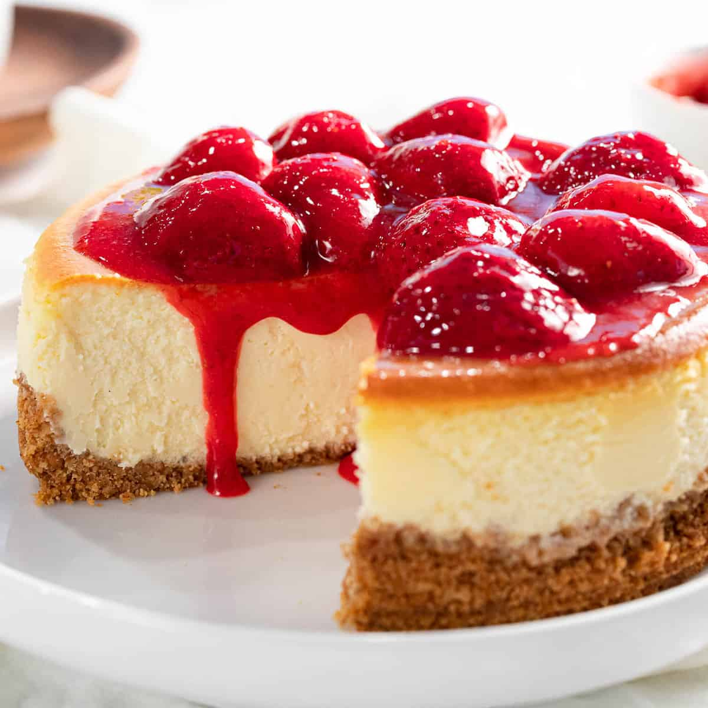

No-Bake Strawberry Cheesecake

Preparation:
- Mix all ingredients together
- Layer slices of strawberries on bottom of ramekin
- Pour mixture atop strawberries
- Top with crumbles of crackers
- Freeze for at least 10min
Ingredients:
- 1cup Fat free vanilla Greek yogurt
- 1/4cup Low fat cream cheese
- 1scoop Vanilla protien powder
- 2tbsp powdered sweetener
- 1 1/2tbsp cheesecake sugar-free pudding mix
- 1/2tsp vanilla extract
- 2tbsp lemon juice
- 1/2cup strawberries
- Crushed graham crackers
| Calories |
Fat |
Carbs |
Protein |
| 450 |
11g |
? |
54g |